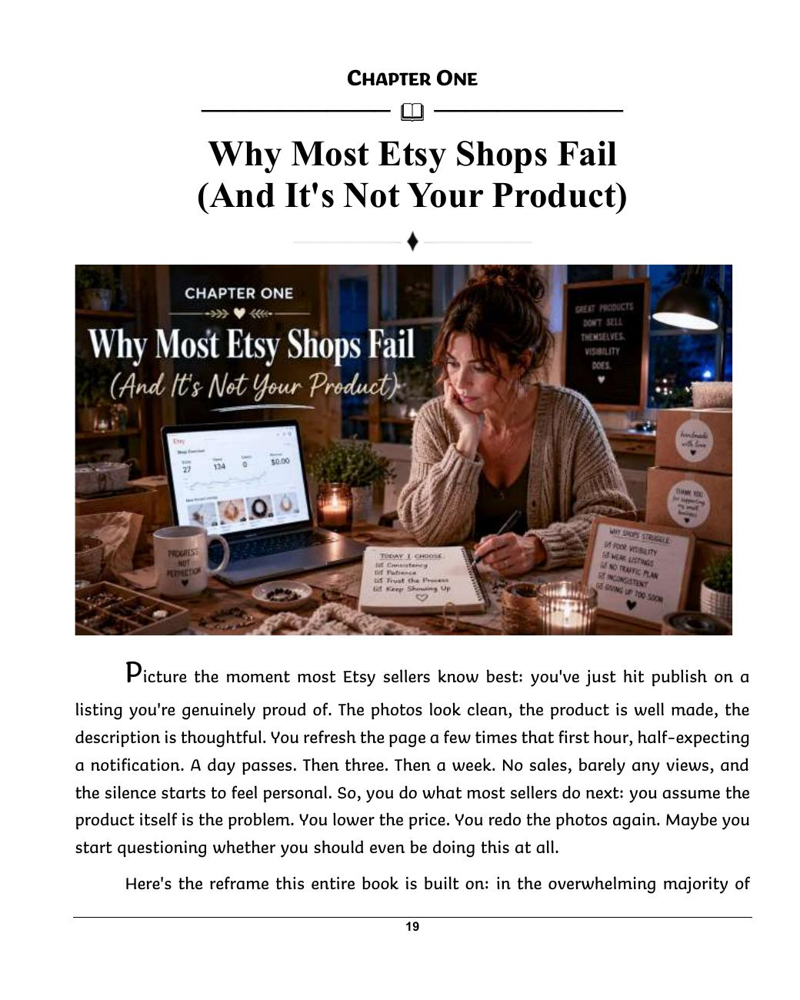
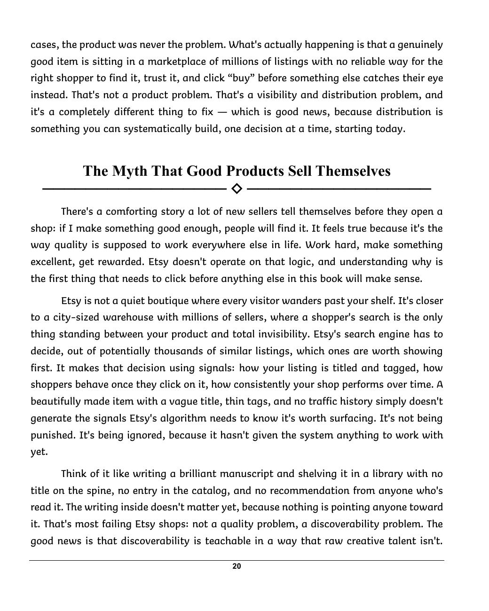

See where the friction is
Review views, visits, conversion, and traffic sources. Use the book’s diagnostic grid to choose which listings need attention first.

A grounded, hands-on guide to helping the right shoppers find, trust, and buy from your Etsy shop.
Written for the seller building something around a day job, Etsy Unlocked turns scattered advice into a sequence: understand your shop’s numbers, improve your listings, develop free traffic, and consider paid promotion when you have evidence it makes sense.
Available as a Kindle edition, paperback, and downloadable PDF.
A quiet shop can leave a seller questioning the product itself. This book asks you to examine what shoppers actually see: how your listings appear in search, what earns a click, and what helps someone decide to buy.
The book’s recurring framework joins optimized listings, free traffic, and paid traffic in that order.
This is a working guide. Chapters pair explanations with exercises, from a signal audit of underperforming listings to a 30-day shop review, a photography check, and a written decision framework for ads. The final chapter pulls the work into a 90-day growth plan.
It speaks to handmade makers, vintage resellers, craft suppliers, digital download creators, and print-on-demand sellers. Category-specific chapters show where the approach changes for each type of shop.
You can read it cover to cover, then return to the action plans with your own listings, notes, and shop statistics in hand.
The manuscript moves from diagnosis to listing work, free marketing, paid decisions, and longer-term systems. Here are the major areas you’ll work through.
Review views, visits, conversion, and traffic sources. Use the book’s diagnostic grid to choose which listings need attention first.
Work on titles, tags, attributes, keyword research, photography, video, descriptions, pricing, and a complete listing audit.
Consider Pinterest, short-form content, social communities, email, search-friendly content, reviews, and collaborations.
Compare Etsy Ads and Offsite Ads, check margins and fees, and plan a small test only after assessing the listing underneath it.
Study renewals, single-variable tests, bundles, promotions, and your own results instead of changing everything at once.
Set up customer-service habits, protect listing quality as the catalog grows, and consider income beyond one marketplace.
The closing chapter brings the book’s work together in three phases. These are planning milestones, not a promise that every shop will grow on the same timetable.
Record a baseline, choose a small group of priority listings, and audit titles, tags, images, descriptions, and pricing.
Keep up a realistic free-marketing routine, improve the rest of the catalog, and track which activities bring useful signals.
Compare results with the starting point. Decide whether more listing work, more free traffic, or a limited ad test is the right next step.
These are two real pages from the manuscript. The opening chapter starts with a familiar moment: a carefully made listing goes live, then receives little attention. The book uses that moment to begin a practical review of discoverability.


“This book exists for that person. Not the seller with a marketing degree and a team of contractors, but the one building this alone, on nights and weekends, who needs a system that works without needing a fortune to test it or forty hours a week to run it.”From the introduction to Etsy Unlocked
Each purchase link opens the corresponding store in a new tab. Pricing and availability are shown by the store at checkout.
No. It also addresses vintage, craft supplies, digital downloads, and print on demand. A category-specific chapter identifies where the playbook changes.
No. The book begins with shop diagnosis, listing improvements, and free marketing. It treats paid advertising as a decision to assess after that groundwork.
The checklist is a separate product. The book itself contains chapter actions and a 90-day plan; the checklist offers an additional tracking tool.
Kindle and PDF are digital purchases from different stores. The paperback is a printed copy. Check each store listing for its current delivery details.
Book details: Etsy Unlocked: From Side Hustle to Serious Income · Building Wealth Series · By Open Theory Cove · English · ISBN 9798182386807 · Kindle ASIN B0H73F551T. The manuscript supplied for this page contains 34 chapters.